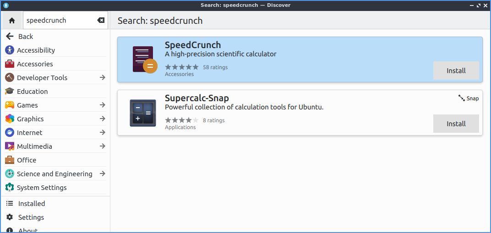
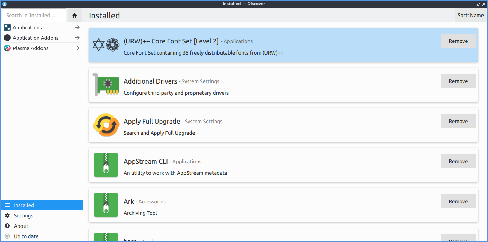
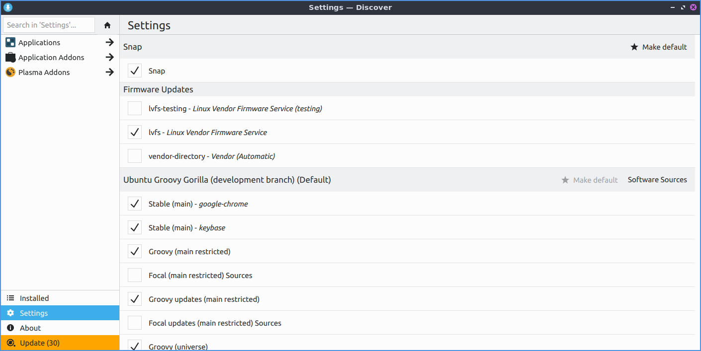
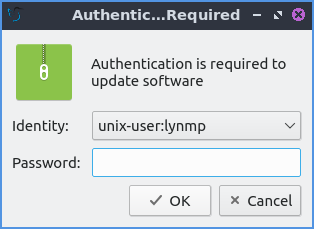
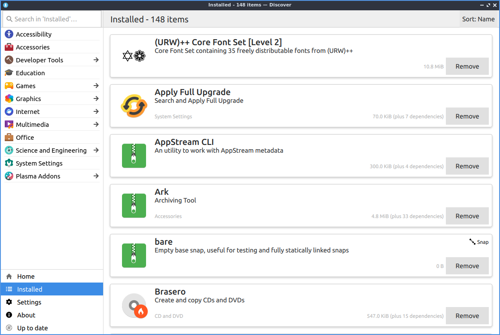

Chapter 4.1 Discover Software Center¶
Discover allows you to install and remove programs and utilities. It has a simplistic interface making it easy to navigate and use. However, Discover only shows GUI applications so if you are looking for command line packages please use Muon Package Manager instead.
Usage¶
Discover allows you to search for applications by using the Search box or by pressing Control + F. To view featured applications press the Home button in the top of the bottom left hand corner. Left clicking on a program will give you a description of it. To install a program press the cloud with downward pointing arrow button that says Install when viewing a single package. When installing or removing software, you will be prompted for your password. You can also browse through different categories on the left clicking on the different categories. If a category has a next to it you can click on it and then will have subcategories. To go back up a little press the Back button in the upper left. In the results after selecting your program you are looking at you can select a screenshot and get a bigger view of the screenshot click on the screenshot. To change which screenshot you are looking at press the left and right arrow buttons near the screenshot. To exit from the screenshot press Escape or click not on the screenshot. To navigate back to the start with press the button that looks like a house.
Press the leftward pointed arrow button to moves back in your history.
To view more information on a program you want to install left click on a program to see more details on it. Towards the right will show a description of the program. To view user reviews of a program click on the text Show All Reviews. To install the program press the Install button. To view more screenshots press the left and right arrows next to the screenshots. To exit the user reviews press Escape or click outside the areas of reviews. To view ratings of thee program is shown in stars with how many ratings of the number of reviews next to ratings. Below the reviews there is information on the package such as the Version and License.
To remove software use the Installed tab or press Alt +I. You can browse your installed packages, search using the search bar (upper left corner), and the click the remove button to remove software by pressing the Remove button. To view more details on the program left click on it. If you want to launch an installed program press the Launch button in the upper right corner.
In the upper right corner of discover you can have a Sort category to sort your search results by , , , or .
To get to your settings on what software to use install use the Settings tab. To remove a source such as a PPA click the hidden red X button on the right hand side of to remove it. To toggle enabling or disabling a software source check or uncheck the checkbox next to that software source.
Updating¶
Discover allows you to update software using the Updates tab located on the bottom of the left column. You can click the Check for Updates button to check for updates manually. If you have updates that need to be installed instead it will say in orange Update(x) where x is the number of the packages needing updating or press Alt+U. When you select updates to install and have updates towards the upper left shows you the number of packages to update and the size of the download in parenthesis. To see the what version will be upgraded on your system will show the old version new version with how much the download size of the update to the right. To see what is changing in a package with the changelog left click on the package and then mouseover to see what has changed in the update. To view info about a package being updated left click on it and then left click :guilabel:` More information`. To finally update press the Update All button to install all updates and then a dialog will pop up you will need to enter your password and press the OK button to make sure you are the one installing these updates. If you need to restart after updating on your updates you will see the text The system requires a restart to apply updates and press the Restart button to restart your machine.
Screenshot¶
Version¶
Denios-OS ships with version 5.25.5 of Discover.
How to Launch¶
To launch Discover from the menu or run
plasma-discover
from the command line. The icon for Discover looks like a blue circle with a white downward pointing arrow.